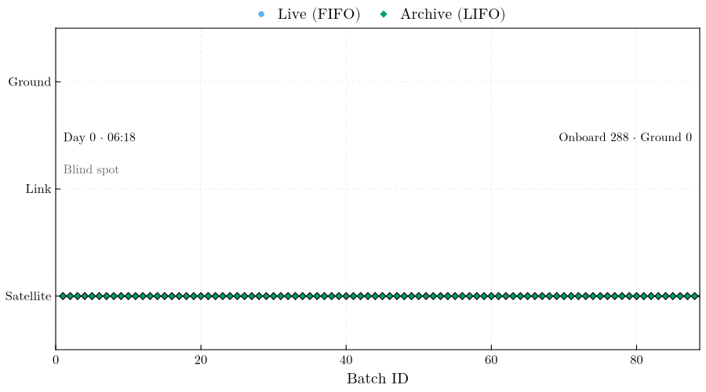

Physics & Queuing Theory
DeepSpaceTelemetry models the telemetry environment of a deep-space science mission: a duty-cycled ground-station contact, a physical downlink with stochastic loss and scheduled disruptions, and the routing doctrine that decides which data reach the ground first. The telemetry, channel, and queuing layers are mission-agnostic; the shipped scenarios model the LISA mission.
Virtual instrument (payload)
The telemetry layers never read the payload: routing, loss, and delay depend on batch counts and sizes only. In synthetic mode the payload is therefore a binary flag series — 0 on a segment holding noise only, 1 on a segment holding a flagged signal. A segment is flagged when its content span [epoch, epoch + segment_duration_sec) holds the instant of an event marker ([[events.markers]]), so the series is declared by the configuration and involves no random draw. Multiplied by a delivery mask, it states directly which samples of an event had reached the ground at a given time.
A physical noise or waveform model enters through physics.data_source = "external": the series of a CSV file is cut into the same segments and passes through the same pipeline.
Bandwidth Profiling
Satellite-to-ground communication is constrained by the ground station's line of sight. The daily contact window opens at telemetry.session_start for telemetry.session_duration_hours (sessions crossing midnight are handled); outside it the capacity is zero, and within it the fractional capacity follows a selectable profile of the window progress x ∈ [0, 1]:
sine:sin²(πx)— zero at both horizons, full capacity at culmination, 50 % on average.sigmoid:[tanh(kx) + tanh(k(1 − x))] / 2withk = telemetry.sigmoid_steepness— a fast horizon breach to sustained peak capacity. The logistic edges are centered on the window boundaries, so the capacity at the exact session edges is ≈ 0.5 rather than 0 (a documented, test-pinned property; the profile models an abrupt acquisition, not a rise from zero).gaussian:exp(−(x − ½)² / 2σ²)withσ = telemetry.gaussian_sigma— a narrow-beam pass.flat: constant full capacity throughout the window.
Link Capacity and the 24-Hour Requirement
The link capacity is configured either as telemetry.max_batches_per_hour — the scenario abstraction — or physically as the downlink data rate telemetry.downlink_kbps against the on-board production rate telemetry.onboard_data_rate_kbps: one batch of content span D then takes D · production / downlink seconds at full capacity, and the catch-up ratio downlink / production states how many hours of production one hour of contact drains. The LISA Definition Study Report (Colpi et al. 2024) gives 230 kbit/s against ≈ 75 kbit/s with 8-hour daily passes, a ratio of ≈ 3 — the margin behind its requirement that data reach the ground within 24 hours of measurement. The delivery-delay metric (Metrology.delivery_delay_table) reports, per run, the distribution of the measurement-to-ground delay of every generated batch and the fraction within post_processing.delivery_requirement_hours (undelivered batches count as non-compliant).
Contact Schedule and Low-Latency Periods
The daily window of [telemetry] generates the nominal passes; [contacts] shapes it. A seasonal term widens the window symmetrically about its center by seasonal_extension_hours · ½ [1 + cos(2π (d − d_peak) / P)], with the day of year d, the peak day season_peak_day_of_year, and the period season_period_days — the Definition Study Report (Colpi et al. 2024) quotes 8 to 12 hours over the year for the ESTRACK antennas, i.e. an 8-hour window with a 4-hour extension. [[contacts.exceptions]] state the window of a date verbatim (a zero duration is a missed pass); an explicit pass list — [[contacts.passes]] or a schedule_csv with the columns Start, DurationHours — replaces the generator altogether for planned schedules. Batches finalized inside any contact window are LIVE, and the capacity profile is evaluated at the position within the actual window, so an extended or shortened pass keeps its horizon-to-horizon shape.
Low-latency periods ([[contacts.low_latency_periods]]) are the extra contacts a mission arranges around a well-localized transient: quasi-real-time download outside the nominal pass, subject to station availability. Each period supplies a constant fraction of the peak capacity (capacity_fraction) for its duration and is an ordinary contact for the emitter (live classification) and the receiver (transfers). The delivery-delay table flags batches that reached the ground inside a period and the compliance summary counts them; the comparison with and without the periods is a pair of runs differing only in contacts.low_latency_enabled, because the realized queue depends on the link history and cannot be replayed from one event log. Every contact window, nominal or low-latency, receives its session figure (session_day<kk>_detail.png, session_day<kk>_low_latency_detail.png).
Packet Loss Channel Models
Each batch transfer attempt on the downlink draws one loss realization from the configured [packet_loss] model:
- Bernoulli: memoryless i.i.d. loss with probability
p_loss— the textbook baseline. - Gilbert–Elliott: the canonical bursty-channel model (Gilbert 1960; Elliott 1963). A two-state Markov chain alternates between a GOOD state (loss probability
p_loss_good) and a BAD state (p_loss_bad); transitions occur once per attempt with probabilitiesp_good_to_bad/p_bad_to_good. The analytic long-run loss rateπ_bad·p_loss_bad + π_good·p_loss_goodwithπ_bad = p_g2b/(p_g2b + p_b2g)is exposed asstationary_loss_rateand validated against the sampled stream in the test suite.
A lost transfer leaves the batch on the link. The loss is detected on the ground when the transfer completes, and the retransmission can be served no earlier than one round-trip light time later — 2 · range / c from telemetry.range_million_km (≈ 333 s at 50 × 10⁶ km; 0 disables the delay) — while the other in-flight batches keep being served, as under a deferred negative-acknowledgement protocol; the link idles only when every in-flight batch is waiting for its round trip. After max_retries failures the batch moves to lost/ — data preserved, mask state 4 — which frees its in-flight slot on the link. on_loss = "drop" is shorthand for a zero-retry budget.
Link-Disruption Events
[[disruption.events]] entries superimpose scheduled link-degrading events — solar flares, spacecraft safe-mode entries, ground-station outages — on the daily visibility schedule. During the blackout phase the link capacity is multiplied by 1 − severity; afterwards it ramps linearly back to nominal over recovery_hours. Throughout blackout and recovery the stochastic loss probability is scaled by loss_multiplier (clamped to [0,1]), modeling the noisy, marginal link of a recovering channel. Overlapping events compose conservatively (minimum capacity, maximum loss multiplier).
Because the emitter gates transmission on the effective link — geometric visibility × disruption factor — data generated during a blackout is stamped ARCH_ and accumulates onboard exactly like blind-spot data; the post-event drain then follows the standard LIVE-FIFO/ARCH-LIFO mechanics with no special-case code.
Scheduled Generation Gaps and the On-Board Recorder
A disruption event with affects = "generation" (the default for type = "antenna_repointing", the minutes-long science interruptions of the antenna rotation) interrupts data production instead of the link: the emitter produces nothing between the event start and start + duration_hours, discards the segments of the batch left incomplete at the gap start (as in an emitter outage, so batch geometry stays uniform), and bounds the gap in events_tx.csv (gap_start / gap_end, Batch = SCHEDULED). Gap boundaries snap to segment boundaries; the severity, recovery, and loss keys of such an event are ignored.
The on-board recorder holds storage.onboard_capacity_days of production (default 14 days, the Report's autonomy without ground contact), i.e. a ceiling in batches through the batch content span. The emitter enforces it without eviction: a batch finalized while the buffer sits at the ceiling is discarded, the loss bounded by gap_start / gap_end rows with Batch = RECORDER (closed at the first finalization that finds room again). Configuration validation warns when the initial blind spot, or the longest interval without ground contact in the schedule, exceeds the capacity. The mission summary shades scheduled gaps and recorder overflows and draws the capacity on the buffer axis when it was reached.
Queuing Theory: LIFO vs FIFO
Between contacts the spacecraft accumulates a backlog (16 blind hours per day under the 8 h passes of the shipped LISA scenarios). When the link opens, the satellite routes data under a strict priority doctrine — a two-class priority queue whose classes are served FIFO and LIFO in the sense of Kleinrock (1975):
- Near-real-time (live) data: highest priority, sent first-in, first-out (FIFO) so the ground sees the newest observations with the smallest latency.
- Archive backfill (LIFO): the remaining bandwidth drains the backlog last-in, first-out — the newest archived data first. For a transient caught live (in the LISA case a massive black-hole binary merger), the archived data immediately preceding it are the most valuable, and LIFO delivery lets alert pipelines extend the waveform backwards from the live event without a gap.

The doctrine batch by batch, over one run of scenarios/stress_8h_bursty.toml. Each row is a stage — buffered on the satellite, in flight on the link, delivered on the ground — and the color the routing family: sky blue live (FIFO), green archive (LIFO), with the marker shape repeating the distinction. Live batches cross to the ground as they are generated, so the sky-blue runs mark the passes; between them the archive segment grows backwards in batch identifier, contiguous with the live tail, which is the LIFO backfill. Through the blackout the ground row stands still while the onboard block extends to the right. The status line carries the mission clock (Day N counts elapsed days, as on the summary axis, and the time is the mission clock, as on the session figures), the link state, and the buffer counters of that frame.
Alert-Latency Metrology
The alert-latency metric measures the effect of the LIFO backfill from the event logs (Metrology.alert_latency_table). Every live batch that reached the ground defines an alert: the event instant t_m is the content end of that batch (the moment the transient's samples exist on board). For a look-back δ, the window [t_m − δ, t_m) together with the alert batch itself is complete on the ground once every batch overlapping it has arrived; the latency L(δ) is that completion instant minus t_m, so L(δ ≤ D) is the delivery delay of the live batch itself and L(δ) is non-decreasing. Under the realized doctrine the arrival instants are the recorded ingested events. The counterfactual first-in, first-out drain re-assigns the very same service completions — the sorted ingested instants, i.e. the same link, the same slots, the same losses — to the batches in content order, each completion going to the oldest batch already generated and still undelivered, with no live priority. The table reports the median and the interquartile band of L(δ) over all alerts on the grid δ = 0, D, 2D, … (D = batch content span) up to post_processing.alert_lookback_hours; alerts whose window reaches before the first batch, or contains a batch that never arrived, are excluded at that δ. Under LIFO the window fills backwards from the live stream, so L(δ) grows with δ at the backfill rate; under FIFO the newest batches of the window arrive last, so L(δ) sits near the time needed to drain the whole backlog generated before the event.
Event markers ([[events.markers]]) are the instants of interest a scenario declares — a transient, a glitch — and the alert latency is evaluated at each of them as well (Metrology.marker_latency_table): the alert batch is the one whose content span holds the marker, t_m is the marker instant itself, and every marker's L(δ) is written to alert_latency_markers.csv and drawn over the population bands. The end-to-end alert latency adds the ground processing budget ground.processing_latency_hours (default 1 h, the low-latency alert pipeline allocation), which the figure annotates; a marker may also trigger a low-latency period low_latency_after_hours after its instant (Contact Schedule above). The emitter stamps the labels of the markers held by a batch into its metadata.json and appends a marker row to events_tx.csv when that batch is finalized.
References
- Colpi, M., et al., LISA Definition Study Report, ESA-SCI-DIR-RP-002 (2024), arXiv:2402.07571.
- Elliott, E. O., Estimates of error rates for codes on burst-noise channels, Bell System Technical Journal 42, 1977–1997 (1963), doi:10.1002/j.1538-7305.1963.tb00955.x.
- Gilbert, E. N., Capacity of a burst-noise channel, Bell System Technical Journal 39, 1253–1265 (1960), doi:10.1002/j.1538-7305.1960.tb03959.x.
- Kleinrock, L., Queueing Systems, Volume I: Theory, Wiley, New York (1975).